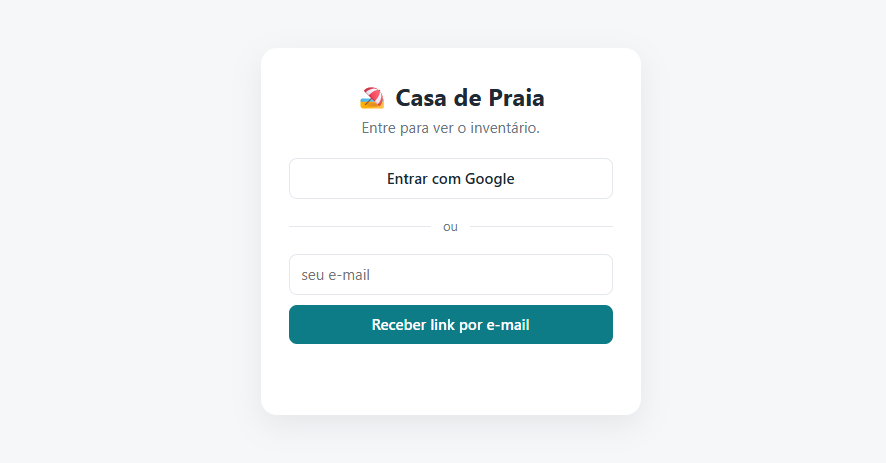
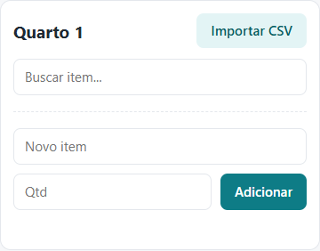
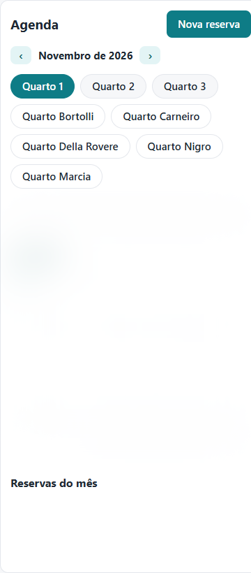
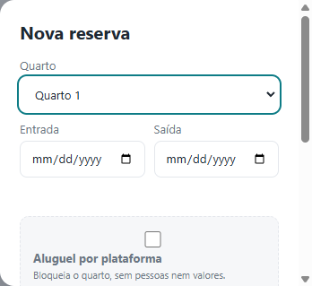
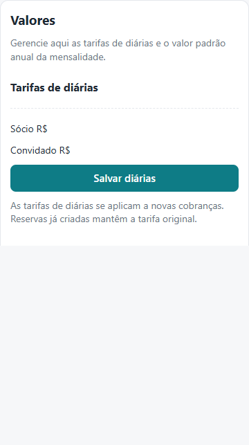
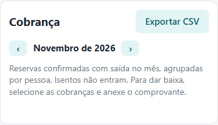
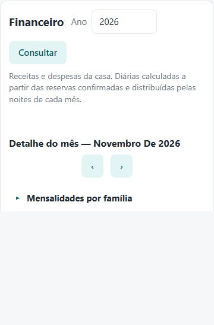
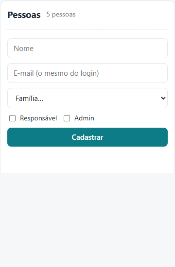

O sistema reúne o inventário da casa, a agenda de ocupação e as ferramentas administrativas. Ele funciona no navegador, no computador ou no celular; não é necessário instalar aplicativo.
Os menus e ações disponíveis variam conforme o perfil de acesso. As áreas de administração são exclusivas de administradores.
As capturas deste manual mostram a interface real em celular. Dados pessoais, reservas e valores foram ocultados nas imagens.
1. Acesso ao sistema
- Abra o endereço do sistema e entre com o e-mail que foi cadastrado para você.
- Escolha Entrar com Google ou informe seu e-mail e toque em Receber link por e-mail.
- No acesso por e-mail, abra a mensagem recebida e use o link para concluir a entrada. Se não encontrar a mensagem, confira o spam.

3. Consultar e atualizar o inventário
- Abra Casa comunitária ou Quartos pessoais e escolha o cômodo.
- Consulte descrição, quantidade, estado e observações. Use Buscar item... para filtrar a lista.
- Quem tem permissão de edição pode adicionar itens, ajustar quantidades, estado e observações. Responsáveis editam o quarto da própria família; administradores editam os espaços comunitários.
Os estados indicam se o item está bom, precisa de reparo ou está inutilizável. Se as ferramentas de edição não aparecerem, a tela está em modo somente leitura para o seu perfil.

4. Consultar a agenda e fazer uma reserva
- Abra Agenda, escolha um quarto e use as setas para mudar o mês.
- Confira o calendário e a lista de reservas do mês. Uma reserva confirmada ocupa as noites entre a entrada e a saída; a noite da saída não conta.
- Em Consultar reservas, informe opcionalmente o período de ocupação e o quarto para localizar reservas que cruzem essas datas. O resultado mostra o espaço, as datas, o status e as pessoas cadastradas; selecione uma reserva para ver seus detalhes.
- Toque em Nova reserva, informe o quarto, a entrada e a saída, e adicione todas as pessoas que vão ficar.
- Classifique cada pessoa como sócio ou convidado. Marque Isento apenas quando aplicável. O sistema mostra uma estimativa do total antes de salvar.
- Inclua uma observação se necessário e salve ou envie a solicitação.


| Tipo de quarto | O que acontece ao salvar |
|---|---|
| Quartos comunitários reserváveis (1, 2 e 3) | A reserva fica confirmada na hora se não houver conflito com outra reserva confirmada. |
| Quarto pessoal de outra família | O pedido fica pendente e não bloqueia as datas até o responsável daquela família ou um administrador aprovar. |
| Quarto pessoal da própria família (responsável) ou reserva feita por administrador | Fica confirmada se não houver conflito. |
Pedidos pendentes e recusados aparecem na seção Solicitações de quartos pessoais. Um indicador no menu Agenda sinaliza pedidos que aguardam a ação do responsável. Não são enviados avisos por e-mail pelo sistema.
O responsável do quarto pessoal ou um administrador pode aprovar ou recusar um pedido. Se a aprovação conflitar com uma reserva confirmada, apenas um administrador pode decidir substituí-la. O dono da reserva ou um administrador pode editar ou cancelar uma reserva.
5. Valores e cálculo das diárias
O total é calculado por pessoa e por noite, usando as tarifas de sócio e convidado configuradas pelo administrador. Pessoas marcadas como isentas não geram cobrança.
Noites cobradas = data de saída − data de entrada. Por exemplo, entrada no dia 10 e saída no dia 13 corresponde a três noites: as noites de 10, 11 e 12.
- O sistema usa a tarifa vigente ao criar a cobrança. Uma cobrança já criada conserva seu valor, mesmo que a tarifa seja alterada depois.
- Alterar o tipo de uma pessoa entre sócio e convidado recalcula a tarifa daquela cobrança.
- A seção Valores também permite configurar a mensalidade padrão de cada ano. O valor definido para o ano vale para todas as famílias e meses daquele ano.
As tarifas e os valores anuais podem ser consultados e alterados por administradores em Administração → Valores.

6. Cobrança e comprovantes
A tela Cobrança reúne diárias de reservas confirmadas com saída no mês selecionado, agrupadas por quarto e hospedagem, e uma mensalidade separada para cada família. Pessoas isentas não entram na cobrança. Use os filtros de tipo e status para consultar as cobranças; a exportação CSV acompanha os filtros selecionados. Use as setas para consultar outros meses.
As mensalidades mostram o valor previsto, o recebido e o saldo em aberto. Um recebimento parcial continua com status Deve. Quando há saldo em aberto, a cobrança mostra os responsáveis cadastrados para a família e permite abrir o WhatsApp com um lembrete do mês selecionado já preenchido; o envio deve ser confirmado no WhatsApp. Administradores podem registrar ou alterar pagamentos de mensalidades diretamente no card da cobrança.
Registrar um pagamento
- No card da hospedagem desejada, clique em Registrar quitação.
- Escolha um ou mais comprovantes e clique em Anexar comprovante e dar baixa. Cada comprovante fica associado a todas as cobranças das pessoas daquela hospedagem.
- O comprovante pode ser PDF, JPG ou PNG, com até 10 MB.
O envio e a visualização de comprovantes são exclusivos de administradores. O sistema exige um comprovante associado para registrar novas baixas; pagamentos antigos podem aparecer sem comprovante porque foram registrados antes dessa exigência.

7. Painel financeiro e Mensalidades e Diárias
Todos os usuários autorizados podem consultar o painel financeiro. O detalhamento de mensalidades e diárias fica em Administração > Mensalidades e Diárias e é acessível a administradores; somente eles podem registrar ou alterar informações e acessar comprovantes.
Mensalidades
O valor previsto é o padrão anual definido em Valores. O recebido é exibido por família e mês. Administradores podem registrar pagamentos; para recebimentos parciais, é possível anexar vários comprovantes à mensalidade, sempre antes de registrar o valor recebido. Os comprovantes são visíveis somente para administradores.
Diárias
Os totais importados são calculados a partir das reservas confirmadas e distribuídos por família conforme os hóspedes e o criador da reserva. Administradores podem ajustar o valor mensal exibido para cada família, sem alterar a reserva nem a cobrança original.
Outras receitas, despesas e categorias
O painel financeiro apresenta os totais de receitas e despesas a todos os usuários autorizados. Em Administração > Receitas e despesas, administradores podem cadastrar categorias e adicionar, editar ou remover lançamentos.
Nessa tela, consulte o ano e combine filtros por mês, tipo, categoria, descrição e faixa de valor. Ao abrir, a lista mostra o mês atual; escolha “Todos os meses” para consultar o ano inteiro. A lista tem páginas de até 25 lançamentos e o botão “Limpar filtros” mostra novamente todos os meses do ano consultado. Os filtros não alteram o painel financeiro.
Para alterar um lançamento, clique em Editar na própria linha, ajuste os campos e clique em Salvar ou Cancelar. Edições não salvas permanecem ao trocar de página ou filtro, mas são perdidas ao recarregar ou fechar a página.

8. Pessoas, histórico e backup
Pessoas
Administradores cadastram quem pode entrar, usando o mesmo e-mail que a pessoa utilizará no login. Cada cadastro pode ser associado a uma família e definido como responsável ou administrador. O sistema impede que o administrador remova ou rebaixe a própria conta.

Histórico
O histórico registra alterações em inventário, reservas, pessoas, valores e dados financeiros. Administradores podem filtrar por tipo de registro e carregar mais resultados.
Backup
Em Pessoas → Baixar backup, um administrador baixa um arquivo JSON com os dados do sistema, incluindo dados pessoais e metadados de comprovantes. Guarde o arquivo em local privado.
9. Privacidade e ajuda
- Somente e-mails cadastrados podem entrar; peça a um administrador para corrigir o cadastro se necessário.
- Todos os usuários autorizados podem consultar inventário e agenda, mas cobranças e informações financeiras são restritas aos perfis permitidos.
- Não compartilhe arquivos de backup: eles podem conter e-mails e outros dados pessoais.
- Se uma opção não aparecer, provavelmente seu perfil não tem permissão para aquela ação. Procure um administrador antes de repetir ou alterar uma operação.
Para voltar ao aplicativo, use Voltar ao sistema. Dúvidas sobre cadastro, reservas ou acesso devem ser encaminhadas a um administrador da casa.